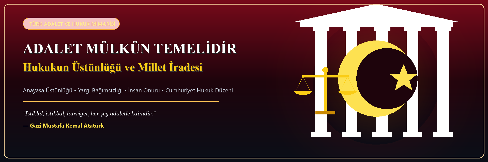

Bulunan İncelemeler: 0
Markdown formatında doğrudan erişilebilirAramanıza uygun sonuç bulunamadı
Lütfen farklı bir anahtar kelime veya kategori seçiniz.
10 Modül • Hukuk & Adalet Kütüphanesi
Doğal hukuktan normativizme, anayasal devletten Türk hukuk devrimine, AİHM içtihatlarından yapay zekâ ve biyoetiğe kadar 10 kapsamlı modül ve 45+ akademik inceleme.

Bir pozitif yasa normunun adaletsizlik derecesine göre hukuki geçerliliğini test edin:
Lütfen farklı bir anahtar kelime veya kategori seçiniz.